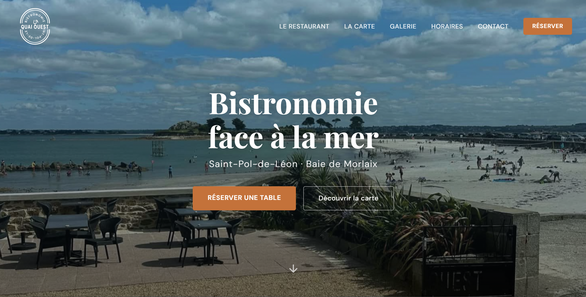
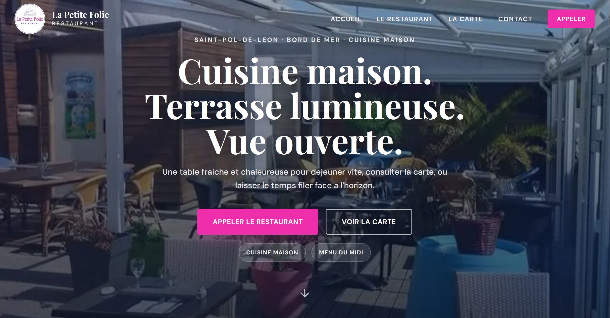
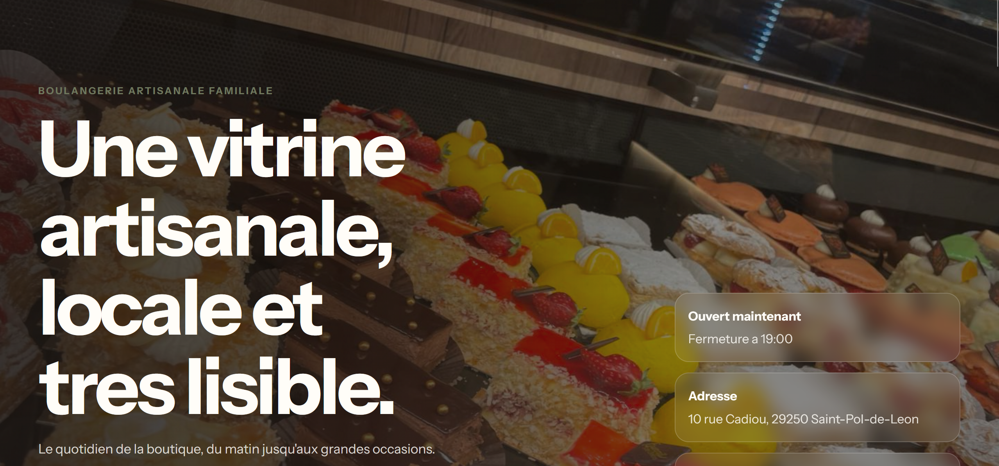

Pour qui
Artisans, restaurants, lieux et maisons qui ont du caractere
Studio web pour artisans, restaurants et maisons locales
Je concois des pages sur mesure pour les activites qui se choisissent autant avec les yeux, l'ambiance et la confiance qu'avec une simple fiche Google. Le fond reste net. La forme laisse une vraie aura.

Pour qui
Artisans, restaurants, lieux et maisons qui ont du caractere
Promesse
Faire ressentir quelque chose avant meme le premier clic
Objectif
Un site qui se comprend en moins de dix secondes
3
concepts deja en ligne pour montrer des ambiances reelles
1 cap
clarifier, rassurer et rendre le contact evident
100 %
responsive, lisible et pense mobile d'abord
sur mesure
pas de theme plaque sur une activite qui merite mieux
Creations
Les cartes projet restent immersives, mais elles adoptent maintenant une presentation plus legere, plus technologique et plus coherente avec le reste du systeme visuel.

Concept 01Restaurant / front de mer
Une vitrine plus immersive, plus atmospherique, qui fait sentir le lieu, la lumiere et le rythme avant le contenu detaille.

Concept 02Restaurant / chaleur editoriale
Une direction plus elegante, plus editoriale, qui combine chaleur, confort et raffinement dans une interface plus douce.

Concept 03Boulangerie / commerce artisanal
Une vitrine plus directe et plus claire, qui met en avant le produit, l'identite locale et l'intention de marque.
Approche
Le redesign part d'une logique simple : plus de clarte, moins de masse visuelle, plus de precision et une vraie signature high-tech. On garde l'effet sur mesure, mais on le traduit avec une matiere visuelle plus futuriste et plus premium.
Cap
L'ambiance devient plus cyber-luxury : fond nuit profond, lueurs metalliques, surfaces en verre, accents bleu electrique et details fins. Le tout reste clair, lisible et aere.
Lecture
Plus de contraste, plus de blancs, plus d'alignement et moins de ruptures lourdes entre les blocs.
Texture
Les cartes deviennent plus fines, avec des bordures metalliques, un glow bleu leger et un fond plus transluscide.
01
Clarifier le message, la cible, les preuves et l'action que la page doit rendre naturelle.
02
Construire une direction plus nette, plus high-tech et plus coherente sur chaque bloc.
03
Integrer proprement, garantir la lisibilite et garder un rendu solide en desktop comme en mobile.
04
Ajuster les derniers details et publier une vitrine deja premium, claire et memorable.
Contact
Le redesign garde le fond artisanal, mais il l'exprime dans une matiere plus premium, plus lumineuse et plus contemporaine. Si une activite a du caractere, elle peut aussi avoir une presence digitale qui respire la maitrise.
Adresse a personnaliser avant mise en ligne : bonjour@votrestudio.fr